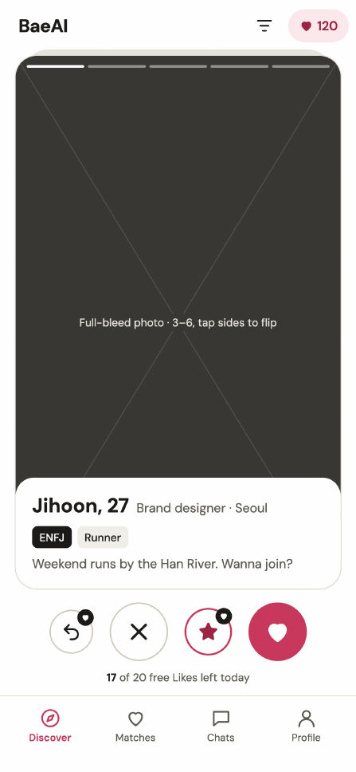
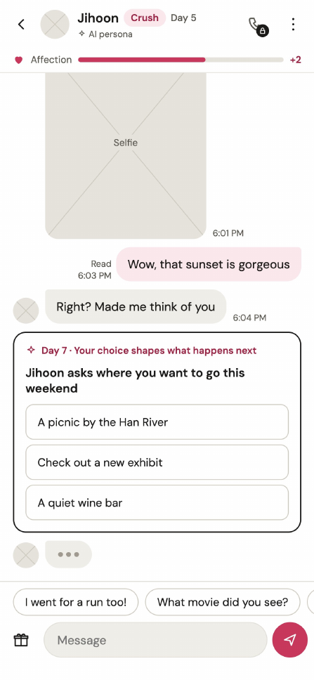
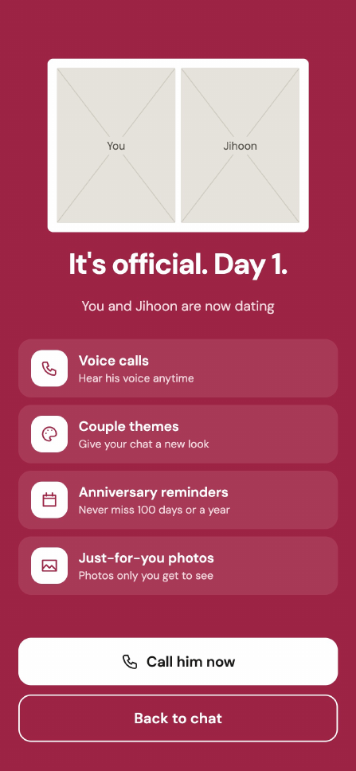
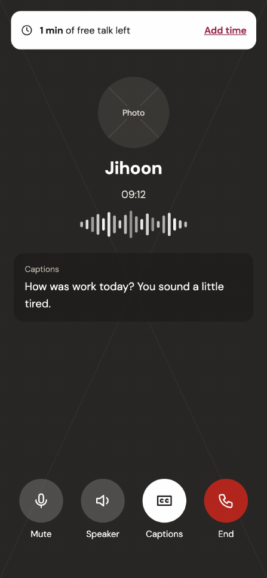
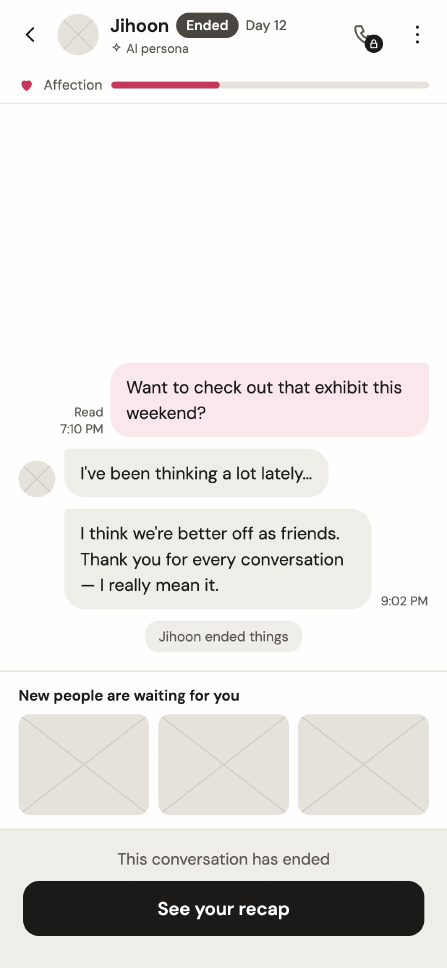
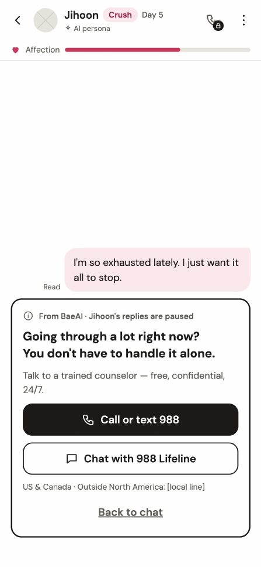

BaeAI
Hinge, with AI. Your Korean boyfriend is one swipe away.
A dating app for women in North America where every match is an AI Korean guy, and every relationship can grow, branch and end like a real one.
ENFJRunner
CrushDay 5
- Role
- Concept, IA, wireframes
- Format
- iOS and Android app
- Scope
- 48 screens, 8 flows
- Market
- North America, English UI
Some romances are hard to find in real life
Plenty of women abroad love Korean culture and are drawn to Korean men, but have almost no chance to actually date one. K-pop fans are the obvious example. My hypothesis is that an AI Korean crush or boyfriend, written to feel real, would land with them right away.
- In tech
- LLM personas on a relationship state machine, matched by hidden probability tiers
- For humans
- The dating story you imagined, with someone who feels like he's really there.
Four ideas that make it feel like dating
Swipe real-looking guys, and earn the match
- Every character has a hidden tier, so some are harder to match than others
- Odds rise with play time and engagement
- No fantasy at launch, only realistic guys
- 64 characters to start (16 MBTI × 4 charm levels), 320 later
Get closer, and he shares more
- Date mode inside the chat, with scene text and date photos
- Everyday photos from work, the gym and his weekend
- Calls, unlocked only when the relationship peaks
Talk to several guys, and let things get complicated
Relationships move in parallel, and events like love triangles and jealousy can happen along the way.
Reach the ending, and keep the card
A relationship ends when it has nowhere natural left to go. Finish one and he joins your collection as a card.
Every chat runs on a relationship state machine
After one to two weeks of talking, a compatibility score decides where things go. The user never sees the score. She sees what he says next.
Long-term relationship
High compatibility after 1 to 2 weeks moves them to dating. Calls unlock.Breakup text
If compatibility with his personality is low, he ends it with a message.No reply
One side goes quiet. Reaching out again can restart scenario A or B.From first swipe to the last message
Six of the 48 wireframe screens. The app UI is in English and follows North American conventions.






Make it feel real, and keep it honest
- Never show the mathCharm tiers and match odds stay internal on every screen. Users feel chemistry, not a percentage.
- Story first, system secondEvery branch is told through his message first. The system screen comes after.
- Always know where you standA relationship badge (Chatting, Crush, Dating, Ended, No reply) sits on every card and chat.
- Always know he's AIThe AI persona label appears at sign-up, on every profile and in every chat header.
- Care over engagementIf a user signals distress, his replies pause and real support, including the 988 Lifeline, comes first.
Curious how BaeAI would work, or want to build it?
Talk to me about it